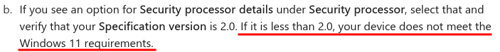
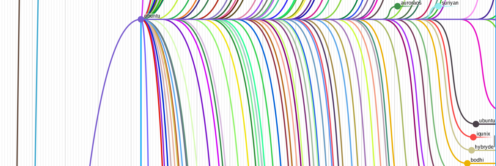

Lorenz Schwab
L0ren2.github.io
1. The issue(s)
- Windows 10 EOL in October 2025
- Security holes will not be patched
- Vulnerable system
- Security holes will not be patched
- Obsolescent hardware (no TPM 2.0)

1- Windows 11 (still) not a great OS
1.1. Windows 11 features 1 / 2
| pros | cons |
|---|---|
| faster & more secure than W10 | hardware constraints (TPM, GPU) |
| better looks | harder to reach settings |
| darkmode | not system-wide |
| easy to use | cumbersome to install software |
| recall opt in now | still privacy nightmare |
1.1.1. Microsoft Recall
- AI search engine
- Personalized for you
- Takes screenshots every couple seconds
Does not differentiate between
- Bank account
- Youtube video
- Word documents
- Work documents (IP)
1.2. Windows 11 features 2 / 2
| pros | cons |
|---|---|
| compatibility | bluescreens |
| updates | no updates for W10 |
| better touch support | anti-features (AI, ads, bloat- & malware) |
| MS office | microsoft dependency |
| easy cloud access | cloud usage is almost mandatory |
1.2.1. Commentary
- Bluescreens should never really happen
- Bluescreens seem more frequent than ever
- Search function is getting worse
- Cortana tries to "help"
2. The Penguin

- Linux solves a lot of problems
- also creates some new ones
2.1. Linux
| pros | cons |
|---|---|
| no ads | might need emulation |
| install stuff manually | what do I want / need? |
| free (as in freedom) | steep learning curve |
| secure | configure yourself |
| the terminal | the terminal |
| customizability | options paralysis |
| hardware compatibility | incompatible software |
2.2. Problems solved
- hardware obsolescence
- bluescreens
- MS anti features
2.3. Problems introduced
- manual installation
- manual configuration
- options paralysis
- breaking your system
- steep learning curve (learn how to fix it)
3. Addressing the issues
- install a linux system on your personal hardware
- get tips for basic configuration
- get to know a few options
- the terminal
3.1. Installing a linux
- distribution (distro)
- bundle software which mostly works well together
- different out-of-the-box experiences
- many different flavours
- often common ancestors
3.2. The Kernel
- provides inner workings of the OS:
- system functions
- file systems
- hardware utilization
- virtual memory paging
- processes & scheduling
- and many more
3.3. The Distro
- Debian -> Ubuntu -> Mint
- Debian -> Ubuntu -> Kubuntu
- OpenSuse
- RedHat (RHEL) -> Alma
- RedHat (RHEL) -> Fedora
- RedHat (RHEL) -> CentOS
- Arch -> Manjaro
3.4. Distrochooser
3.5. Family tree
- do not be scared

3- you don't need to know all
- they are pretty similar anyways
4. Linux intro
- it's okay not to remember everything
- it will help though
- even better: practice, practice, practice
4.1. Multiuser, timesharing system
- users, groups, permissions
- unix-like
4.2. Basic terminal usage
sudo,sucd,ls,cp,mv,cat,head,tailmore,less,grep,findpushd,popd,sed,cutbash,awk,pythonvim,nano,emacsgit,gcc,make, …
4.3. Package management
apt install,dpkg -irpm -i,yum install,dnf installzypper installpacman -S- …
4.4. Change username, password, permissions, ownership
usermodpasswdchmodchown
4.5. Change hostname
edit the following files:
/etc/hostname/etc/hosts
you will need:
- root privileges
- text editor
4.6. Networking
NetworkManagernmcli,nmtui
iwdiwctl
systemdsystemd-networkd,systemd-resolved
wpa_supplicant
4.7. Sound setup
- alsa
- pulse audio
- pipewire
- jack
4.8. Bluetooth
- bluez
- bluetoothctl
- pulse audio (for headphones)
4.9. Text editing inside terminal
vi,vim,nvimnano,pico,microemacs,emacs,emacs
honorable mention to:
cat,sed,ed, et al
4.10. Breaking your system
- it's easy
- delete some important file
- save file in
/etc/with typo - save file with windows line ending
- delete
/bootor/efi - remove
/etc/fstab - remove french language pack via
rm -fr /
4.11. Fixing it
- it's usually not hard
- you might learn something
- learn that some things may take time
- often involves web search and text files
- sometimes you need to reinstall
- you will understand how OS works
- learn to work alone on issues
4.12. Getting help
- ask colleagues
- web search
- wiki for your specific distro
- arch wiki
- forums, stack overflow, stack exchange
- gentoo wiki
- local community (eg. CCC, RZL, …)
- IRC
- AI*
4.13. Bonus
- If you want to go above and beyond
- If you want to learn more about linux
- And if you used linux for about 1 year
- I recommend to try and install arch linux
- You should only need wiki, web and forums
- You will learn a lot